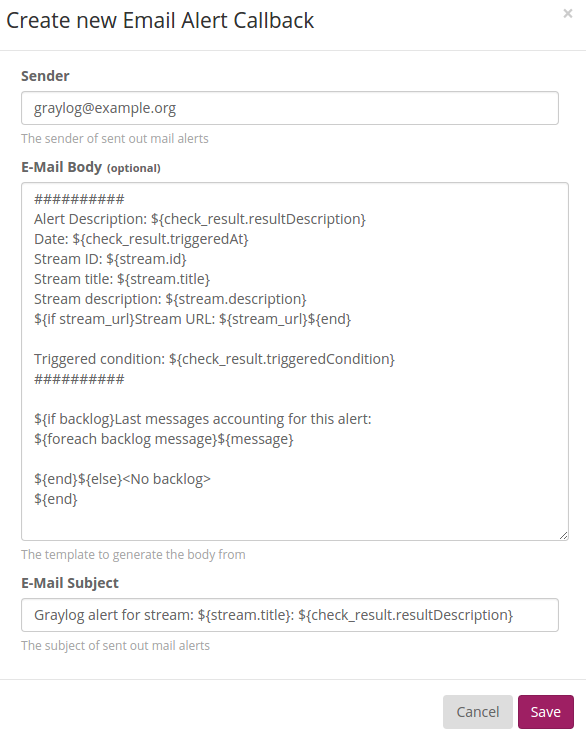
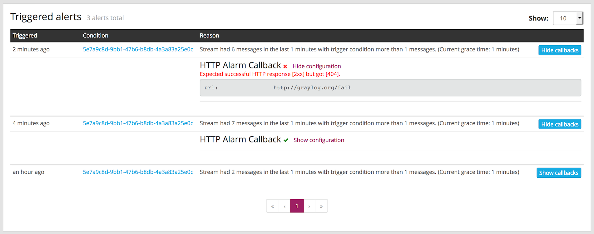

Streams¶
What are streams?¶
The Graylog streams are a mechanism to route messages into categories in realtime while they are processed. You define rules that instruct Graylog which message to route into which streams. Imagine sending these three messages to Graylog:
message: INSERT failed (out of disk space)
level: 3 (error)
source: database-host-1
message: Added user 'foo'.
level: 6 (informational)
source: database-host-2
message: smtp ERR: remote closed the connection
level: 3 (error)
source: application-x
One of the many things that you could do with streams is creating a stream called Database errors that is catching every error message from one of your database hosts.
Create a new stream with these rules, selecting the option to match all rules:
- Field
levelmust be greater than4 - Field
sourcemust match regular expression^database-host-\d+
This will route every new message with a level higher than WARN and a source that matches the database host regular
expression into the stream.
A message will be routed into every stream that has all (or any) of its rules matching. This means that a message can be part of many streams and not just one.
The stream is now appearing in the streams list and a click on its title will show you all database errors.
Streams can be used to be alerted in case certain condition happens. We cover more topics related to alerts in Alerts.
What’s the difference to saved searches?¶
The biggest difference is that streams are processed in realtime. This allows realtime alerting and forwarding to other systems. Imagine forwarding your database errors to another system or writing them to a file by regularly reading them from the message storage. Realtime streams do this much better.
Another difference is that searches for complex stream rule sets are always comparably cheap to perform because a message is tagged with stream IDs when processed. A search for Graylog internally always looks like this, no matter how many stream rules you have configured:
streams:[STREAM_ID]
Building a query with all rules would cause significantly higher load on the message storage.
How do I create a stream?¶
- Navigate to the streams section from the top navigation bar.
- Click “Create stream”.
- Save the stream after entering a name and a description. For example All error messages and Catching all error messages from all sources. The stream is now saved but not yet activated.
- Click on “Edit rules” for the stream you just created. That will open a page where you can manage and test stream rules.
- Indicate whether any or all of the rules must be true to include a message in the stream.
- Add stream rules, by indicating the field that you want to check, and the condition that should satisfy. Try the rules against some messages by loading them from an input or manually giving a message ID. Once you are satisfied with the results, click on “I’m done”.
- The stream is still paused, click on the “Start stream” button to activate the stream.
Alerts¶
You can define conditions that trigger alerts. For example whenever the stream All production exceptions has more than 50 messages per minute or when the field milliseconds had a too high standard deviation in the last five minutes.
Hit Manage alerts in the stream Action dropdown to see already configured alerts, alerts that were fired in the past or to configure new alert conditions.
You can configure the interval for alert checks in your graylog.conf using the alert_check_interval variable. The default is to check for alerts every 60 seconds.
Graylog ships with default alert callbacks and can be extended with Plugins.
Alert condition types explained¶
Message count condition¶
This condition triggers whenever the stream received more than X messages in the last Y minutes. Perfect for example to be alerted when there are many exceptions on your platform. Create a stream that catches every error message and be alerted when that stream exceeds normal throughput levels.
Field value condition¶
Triggers whenever the result of a statistical computation of a numerical message field in the stream is higher or lower than a given threshold. Perfect to monitor for performance problems: Be alerted whenever the standard deviation of the response time of your application was higher than X in the last Y minutes.
Field string value condition¶
This condition triggers whenever the stream received at least one message since the last alert run that has a field set to a given value. Get an alert when a message with the field type set to security arrives in the stream.
Important: We do not recommend to run this on analyzed fields like message or full_message because it is broken down to terms and you might get unexpected alerts. For example a check for security would also alert if a message with the field set to no security is received because it was broken down to no and security. This only happens on the analyzed message and full_message in Graylog. Please also take note that only a single alert is raised for this condition during the alerting interval, although multiple messages containing the given value may have been received since the last alert.
What is the difference between alert callbacks and alert receivers?¶
There are two groups of entities configuring what happens when an alert is fired: Alarm callbacks and alert receivers.
Alarm callbacks are a list of events that are being processed when an alert is triggered. There could be an arbitrary number of alarm callbacks configured here. If there is no alarm callback configured at all, a default email transport will be used to notify about the alert. If one or more alarm callbacks are configured (which might include the email alarm callback or not) then all of them are executed for every alert.
If the email alarm callback is used because it appears once or multiple times in the alarm callback list, or the alarm callback list is empty so the email transport is used per default, then the list of alert receivers is used to determine which recipients should receive the alert nofications. Every Graylog user (which has an email address configured in their account) or email address in that list gets a copy of the alerts sent out.
Alert callbacks types explained¶
In this section we explain what the default alert callbacks included in Graylog do, and how to configure them. Alert callbacks are meant to be extensible through Plugins, you can find more types in the Graylog Marketplace or even create your own.
Email alert callback¶
The email alert callback can be used to send an email to the configured alert receivers when the conditions are triggered.
Three configuration options are available for the alert callback to customize the email that will be sent.
The E-Mail Body and E-Mail Subject are jmte templates. jmte is a minimal template engine that supports variables, loops and conditions. See the jmte documentation for a language reference.
We expose the following objects to the templates.
streamThe stream this alert belongs to.
stream.idID of the streamstream.titletitle of the streamstream.descriptionstream description
stream_url- A string that contains the HTTP URL to the stream.
check_resultThe check result object for this stream.
check_result.triggeredConditionstring representation of the triggered alert conditioncheck_result.triggeredAtdate when this condition was triggeredcheck_result.resultDescriptiontext that describes the check result
backlog- A list of
messageobjects. Can be used to iterate over the messages viaforeach. message(only available via iteration over thebacklogobject)The message object has several fields with details about the message. When using the
messageobject without accessing any fields, thetoString()method of the underlying Java object is used to display it.message.idautogenerated message idmessage.messagethe actual message textmessage.sourcethe source of the messagemessage.timestampthe message timestampmessage.fieldsmap of key value pairs for all the fields defined in the message
The
message.fieldsfields can be useful to get access to arbitrary fields that are defined in the message. For examplemessage.fields.full_messagewould return thefull_messageof a GELF message.
HTTP alert callback¶
The HTTP alert callback lets you configure an endpoint that will be called when the alert is triggered.
Graylog will send a POST request to the callback URL including information about the alert. Here is an example of the payload included in a callback:
{
"check_result": {
"result_description": "Stream had 2 messages in the last 1 minutes with trigger condition more than 1 messages. (Current grace time: 1 minutes)",
"triggered_condition": {
"id": "5e7a9c8d-9bb1-47b6-b8db-4a3a83a25e0c",
"type": "MESSAGE_COUNT",
"created_at": "2015-09-10T09:44:10.552Z",
"creator_user_id": "admin",
"grace": 1,
"parameters": {
"grace": 1,
"threshold": 1,
"threshold_type": "more",
"backlog": 5,
"time": 1
},
"description": "time: 1, threshold_type: more, threshold: 1, grace: 1",
"type_string": "MESSAGE_COUNT",
"backlog": 5
},
"triggered_at": "2015-09-10T09:45:54.749Z",
"triggered": true,
"matching_messages": [
{
"index": "graylog2_7",
"message": "WARN: System is failing",
"fields": {
"gl2_remote_ip": "127.0.0.1",
"gl2_remote_port": 56498,
"gl2_source_node": "41283fec-36b4-4352-a859-7b3d79846b3c",
"gl2_source_input": "55f15092bee8e2841898eb53"
},
"id": "b7b08150-57a0-11e5-b2a2-d6b4cd83d1d5",
"stream_ids": [
"55f1509dbee8e2841898eb64"
],
"source": "127.0.0.1",
"timestamp": "2015-09-10T09:45:49.284Z"
},
{
"index": "graylog2_7",
"message": "ERROR: This is an example error message",
"fields": {
"gl2_remote_ip": "127.0.0.1",
"gl2_remote_port": 56481,
"gl2_source_node": "41283fec-36b4-4352-a859-7b3d79846b3c",
"gl2_source_input": "55f15092bee8e2841898eb53"
},
"id": "afd71342-57a0-11e5-b2a2-d6b4cd83d1d5",
"stream_ids": [
"55f1509dbee8e2841898eb64"
],
"source": "127.0.0.1",
"timestamp": "2015-09-10T09:45:36.116Z"
}
]
},
"stream": {
"creator_user_id": "admin",
"outputs": [],
"matching_type": "AND",
"description": "test stream",
"created_at": "2015-09-10T09:42:53.833Z",
"disabled": false,
"rules": [
{
"field": "gl2_source_input",
"stream_id": "55f1509dbee8e2841898eb64",
"id": "55f150b5bee8e2841898eb7f",
"type": 1,
"inverted": false,
"value": "55f15092bee8e2841898eb53"
}
],
"alert_conditions": [
{
"creator_user_id": "admin",
"created_at": "2015-09-10T09:44:10.552Z",
"id": "5e7a9c8d-9bb1-47b6-b8db-4a3a83a25e0c",
"type": "message_count",
"parameters": {
"grace": 1,
"threshold": 1,
"threshold_type": "more",
"backlog": 5,
"time": 1
}
}
],
"id": "55f1509dbee8e2841898eb64",
"title": "test",
"content_pack": null
}
}
Alert callback history¶
Sometimes sending alert callbacks may fail for some reason. Graylog provides an alert callback history for those ocasions, helping you to debug and fix any problems that may arise.
To check the status of alert callbacks, go to the Streams page, and click on the Manage alerts button next to the stream containing the alert callbacks. You can find the alert callback history at the bottom of that page, in the Triggered alerts section.
On the list of alerts, clicking on Show callbacks will open a list of all the callbacks involved in the alert, including their status and configuration at the time the alert was triggered.
Outputs¶
The stream output system allows you to forward every message that is routed into a stream to other destinations.
Outputs are managed globally (like message inputs) and not for single streams. You can create new outputs and activate them for as many streams as you like. This way you can configure a forwarding destination once and select multiple streams to use it.
Graylog ships with default outputs and can be extended with Plugins.
Use cases¶
These are a few example use cases for streams:
- Forward a subset of messages to other data analysis or BI systems to reduce their license costs.
- Monitor exception or error rates in your whole environment and broken down per subsystem.
- Get a list of all failed SSH logins and use the quickvalues to analyze which user names where affected.
- Catch all HTTP POST requests to
/loginthat were answered with a HTTP 302 and route them into a stream called Successful user logins. Now get a chart of when users logged in and use the quickvalues to get a list of users that performed the most logins in the search time frame.
How are streams processed internally?¶
The most important thing to know about Graylog stream matching is that there is no duplication of stored messages. Every message that comes
in is matched against all rules of a stream. The internal ID of every stream that has all rules matching is appended to the streams
array of the processed message.
All analysis methods and searches that are bound to streams can now easily narrow their operation by searching with a
streams:[STREAM_ID] limit. This is done automatically by Graylog and does not have to be provided by the user.
Stream Processing Runtime Limits¶
An important step during the processing of a message is the stream classification. Every message is matched against the user-configured stream rules. If every rule of a stream matches, the message is added to this stream. Applying stream rules is done during the indexing of a message only, so the amount of time spent for the classification of a message is crucial for the overall performance and message throughput the system can handle.
There are certain scenarios when a stream rule takes very long to match. When this happens for a number of messages, message processing can stall, messages waiting for processing accumulate in memory and the whole system could become non-responsive. Messages are lost and manual intervention would be necessary. This is the worst case scenario.
To prevent this, the runtime of stream rule matching is limited. When it is taking longer than the configured runtime limit, the process of matching this exact message against the rules of this specific stream is aborted. Message processing in general and for this specific message continues though. As the runtime limit needs to be configured pretty high (usually a magnitude higher as a regular stream rule match takes), any excess of it is considered a fault and is recorded for this stream. If the number of recorded faults for a single stream is higher than a configured threshold, the stream rule set of this stream is considered faulty and the stream is disabled. This is done to protect the overall stability and performance of message processing. Obviously, this is a tradeoff and based on the assumption, that the total loss of one or more messages is worse than a loss of stream classification for these.
There are scenarios where this might not be applicable or even detrimental. If there is a high fluctuation of the message load including situations where the message load is much higher than the system can handle, overall stream matching can take longer than the configured timeout. If this happens repeatedly, all streams get disabled. This is a clear indicator that your system is overutilized and not able to handle the peak message load.
How to configure the timeout values if the defaults do not match¶
There are two configuration variables in the configuration file of the server, which influence the behavior of this functionality.
stream_processing_timeoutdefines the maximum amount of time the rules of a stream are able to spend. When this is exceeded, stream rule matching for this stream is aborted and a fault is recorded. This setting is defined in milliseconds, the default is2000(2 seconds).stream_processing_max_faultsis the maximum number of times a single stream can exceed this runtime limit. When it happens more often, the stream is disabled until it is manually reenabled. The default for this setting is3.
What could cause it?¶
If a single stream has been disabled and all others are doing well, the chances are high that one or more stream rules are performing bad under certain circumstances. In most cases, this is related to stream rules which are utilizing regular expressions. For most other stream rules types the general runtime is constant, while it varies very much for regular expressions, influenced by the regular expression itself and the input matched against it. In some special cases, the difference between a match and a non-match of a regular expression can be in the order of 100 or even 1000. This is caused by a phenomenon called catastrophic backtracking. There are good write-ups about it on the web which will help you understanding it.
Summary: How do I solve it?¶
- Check the rules of the stream that is disabled for rules that could take very long (especially regular expressions).
- Modify or delete those stream rules.
- Re-enable the stream.
Programmatic access via the REST API¶
Many organisations already run monitoring infrastructure that are able to alert operations staff when incidents are detected. These systems are often capable of either polling for information on a regular schedule or being pushed new alerts - this article describes how to use the Graylog Stream Alert API to poll for currently active alerts in order to further process them in third party products.
Checking for currently active alert/triggered conditions¶
Graylog stream alerts can currently be configured to send emails when one or more of the associated alert conditions evaluate to true. While sending email solves many immediate problems when it comes to alerting, it can be helpful to gain programmatic access to the currently active alerts.
Each stream which has alerts configured also has a list of active alerts, which can potentially be empty if there were no alerts so far. Using the stream’s ID, one can check the current state of the alert conditions associated with the stream using the authenticated API call:
GET /streams/<streamid>/alerts/check
It returns a description of the configured conditions as well as a count of how many triggered the alert. This data can be used to for example send SNMP traps in other parts of the monitoring system.
Sample JSON return value:
{
"total_triggered": 0,
"results": [
{
"condition": {
"id": "984d04d5-1791-4500-a17e-cd9621cc2ea7",
"in_grace": false,
"created_at": "2014-06-11T12:42:50.312Z",
"parameters": {
"field": "one_minute_rate",
"grace": 1,
"time": 1,
"backlog": 0,
"threshold_type": "lower",
"type": "mean",
"threshold": 1
},
"creator_user_id": "admin",
"type": "field_value"
},
"triggered": false
}
],
"calculated_at": "2014-06-12T13:44:20.704Z"
}
Note that the result is cached for 30 seconds.
List of already triggered stream alerts¶
Checking the current state of a stream’s alerts can be useful to trigger alarms in other monitoring systems, but if one wants to send more detailed messages to operations, it can be very helpful to get more information about the current state of the stream, for example the list of all triggered alerts since a certain timestamp.
This information is available per stream using the call:
GET /streams/<streamid>/alerts?since=1402460923
The since parameter is a unix timestamp value. Its return value could be:
{
"total": 1,
"alerts": [
{
"id": "539878473004e72240a5c829",
"condition_id": "984d04d5-1791-4500-a17e-cd9621cc2ea7",
"condition_parameters": {
"field": "one_minute_rate",
"grace": 1,
"time": 1,
"backlog": 0,
"threshold_type": "lower",
"type": "mean",
"threshold": 1
},
"description": "Field one_minute_rate had a mean of 0.0 in the last 1 minutes with trigger condition lower than 1.0. (Current grace time: 1 minutes)",
"triggered_at": "2014-06-11T15:39:51.780Z",
"stream_id": "53984d8630042acb39c79f84"
}
]
}
Using this information more detailed messages can be produced, since the response contains more detailed information about the nature of the alert, as well as the number of alerts triggered since the timestamp provided.
Note that currently a maximum of 300 alerts will be returned.
FAQs¶
Using regular expressions for stream matching¶
Stream rules support matching field values using regular expressions. Graylog uses the Java Pattern class to execute regular expressions.
For the individual elements of regular expression syntax, please refer to Oracle’s documentation, however the syntax largely follows the familiar regular expression languages in widespread use today and will be familiar to most.
However, one key question that is often raised is matching a string in case insensitive manner. Java regular expressions are case sensitive by default. Certain flags, such as the one to ignore case sensitivity can either be set in the code, or as an inline flag in the regular expression.
To for example route every message that matches the browser name in the following user agent string:
Mozilla/5.0 (Macintosh; Intel Mac OS X 10_9_1) AppleWebKit/537.36 (KHTML, like Gecko) Chrome/32.0.1700.107 Safari/537.36
the regular expression .*applewebkit.* will not match because it is case sensitive.
In order to match the expression using any combination of upper- and lowercase characters use the (?i) flag as such:
(?i).*applewebkit.*
Most of the other flags supported by Java are rarely used in the context of matching stream rules or extractors, but if you need them their use is documented on the same Javadoc page by Oracle.
Can I add messages to a stream after they were processed and stored?¶
No. Currently there is no way to re-process or re-match messages into streams.
Only new messages are routed into the current set of streams.